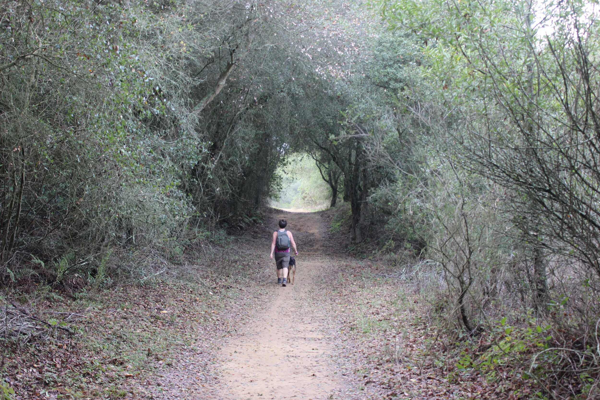
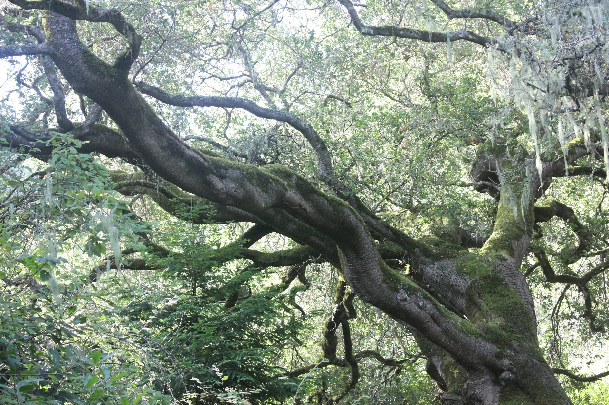

Nature as healer
Mindful immersion in natural settings can support mental and physical regulation.
East Bay nature-based sessions
Ecotherapy integrates the more-than-human world into psychotherapy. For some clients, outdoor settings can deepen regulation, perspective, and connection while we continue trauma-informed therapeutic work.
Outdoor sessions are available in East Bay locations after initial sessions establish rapport, goals, and a shared sense of safety.


Mindful immersion in natural settings can support mental and physical regulation.

Slowing down and observing ecosystems can reveal lessons about pace, adaptation, and belonging.
The more-than-human world can reflect patterns we are living inside. Through guided attention to place, rhythm, and relationship, we can notice what is being repeated, what is being protected, and what is ready to change.
We discuss terrain, sensory factors, privacy, transportation, and physical comfort before scheduling. If outdoor care is not a fit on a given week, we can shift to telehealth.
For broader treatment details, visit the somatic therapy approach and training overview.
Bring it up during your consult. We can talk through questions, concerns, and how to incorporate nature-based sessions in a way that supports your therapeutic goals.